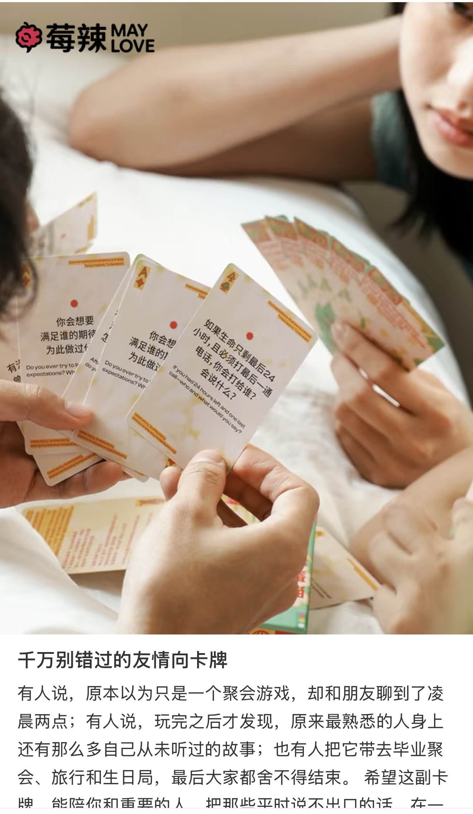

日常 · 线上协作
平时以线上协作为主。筹备前有约 15 天共创期，稳定参与讨论、任务推进与关键节点协作。
PTU CAMPUS · CO-CREATION PLAN
一场活动背后，
需要怎样的一群人？
从一个校园里的小发现，到一场真实发生的相遇。
这一次，来当共同创造它的人。
2026 年 11—12 月 · 每月一场活动 · 约 15 天共创期
我们是「北辰青年·PTU校园团队」。
想做能让大学生的声音被听见的场域。
北辰青年将青年成长放进真实的对话与实践中：通过经历探索自己、连接他人，从参与活动逐渐走向创造活动。
校园团队与伙伴共同发现校园中的真实需要、设计活动体验、让想法真实发生。你可以在约定目标和资源边界内提出方案、组织工作、推进负责的模块，完成交付与复盘。
每个人都能成为创造者。跨模块协调和重要调整，需要与项目统筹沟通。
点击地图节点，展开完整责任。
方向可以多人协作，也可以按工作量组合。
这是可轮值的跨模块职责：观察整体状态、发现遗漏、及时补位，并提供具体客观的改进反馈。并非独立招聘岗位。
创造发生在现场之前，
也延续在活动结束之后。
平时以线上协作为主。筹备前有约 15 天共创期，稳定参与讨论、任务推进与关键节点协作。
活动前演练须线下参与，熟悉流程和协作；活动当天线下执行，依实际情况沟通调整。
完成活动回流、复盘与经验沉淀，再在线下约饭、团建与交流中，继续认识彼此。

AFTER THE EVENT
活动后一起约饭、交流。延时摄影、胶片机、一起拍抽象小视频，都可以成为团建的灵感。具体形式与安排待补充。
从参与一次讨论，到负责一个模块，经历提出方案、组织推进、交付与复盘的完整过程。
日常不要求每天高强度投入。每场活动筹备前有约 15 天共创期，成员需稳定参与讨论、任务推进和关键节点协作。请结合课程、生活认真评估时间。
活动前演练与活动当天须线下参与。日常以线上协作为主，结束后安排线下约饭、团建与交流。
每周工时、会议频率、活动地点及具体日期：待补充。
目前没有证书、推荐机会、实习机会等外部激励保障。团队更看重真实做成一件事、锻炼能力、学习协作，以及给参与者带来的价值。
你有机会参与项目实践、负责模块、与伙伴协作；个人成长结果及未来职业资源不作保证。
认同北辰青年理念；对承诺任务负责，变化及时同步；愿意提出想法和不同意见；尊重差异与队友贡献；在实践中创造真实活动价值。
准备初步意向，下一步是
约 10 分钟的线上匹配沟通。